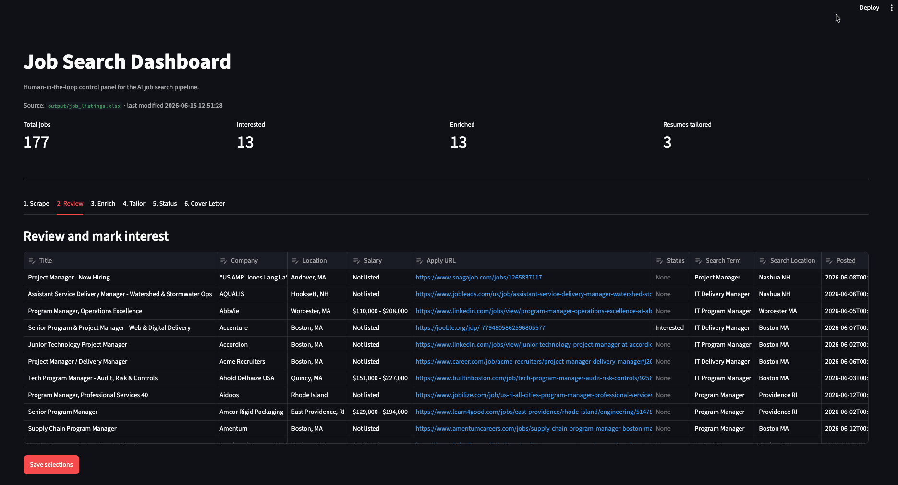
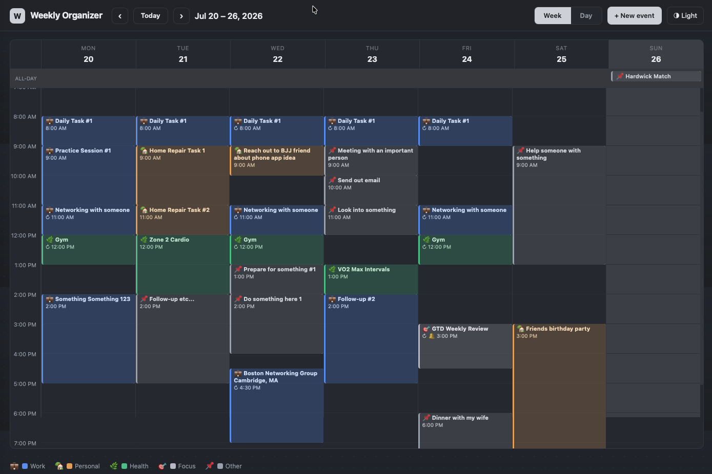
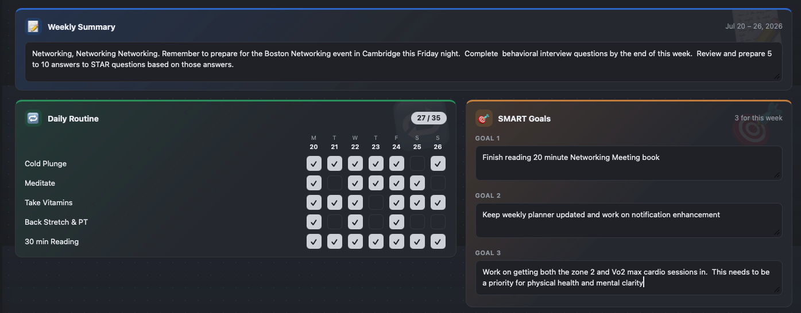

I don't just manage projects. I build them.
I was the developer behind billion-dollar platforms
and multi-million dollar programs before I ever
managed them. That background is what I bring to
AI now. The results have surprised even me.
A job search tool I built for myself — and the first real AI project I have built and actually use. It surfaces relevant listings, gives me the company intelligence I need to decide whether to apply, and then handles the time-consuming parts: selecting the right resume bullets and drafting a cover letter. I stay in the loop at every step.
The pipeline scrapes job boards across multiple titles and locations, then I review each listing and mark the roles I want to pursue. For those roles, the system pulls company background, news, and a Claude-generated match score that compares the job description against my full 59-bullet resume database. I use that score to decide whether to move forward. When I do, Claude selects the best-fit bullets and drafts both a tailored resume and a voice-matched cover letter — both as editable Word documents I review and refine before anything goes out.
The best roles rarely come from a job board. They come from a referral or a company careers page. So the tailoring step takes a role from either source — pulled from the scraper, or typed in by hand — and runs the identical pipeline on both.
Application tracking happens in Notion, not in this pipeline. Every role moves through a tracker I update by hand, status by status, application to offer. Human in the loop, on purpose.

Structured master resume in JSON — 59 bullets tagged by skill, strength scored, ready for AI selection.
Config-driven job search via JSearch API (OpenWeb Ninja). Captures full job descriptions at scrape time. Filters by salary, recency, job type, and title allowlist. Outputs to dated Excel.
Claude API reads job description, selects best-fit bullets, rewrites summary, generates Word doc. 93/100 match score.
Enriches shortlisted roles with company background, recent news, and industry data via DuckDuckGo and NewsAPI. Claude API scores each role against the master resume (0–100 match) and displays the badge in the HTML report.
Generates a formatted HTML report of enriched listings with company briefs and one-click resume tailor commands.
This site — documenting the project, the journey, and the build. Hosted on AWS S3 with Route 53.
Browser control panel for the whole pipeline. Each stage runs from a button with live logs; review and tailor without touching the terminal.
Claude API generates a voice-matched cover letter grounded in the same bullets selected for the tailored resume. Writing rules, anti-AI guardrails, and before/after examples embedded directly in the prompt. Outputs a submission-ready .docx.
Tailoring now accepts a role typed in by hand, not just one found by the scraper, and optionally writes it into the tracker so both sources land in one view. Added validation on the model's own output: bullet-count overruns are trimmed, over-length summaries and bullets are reported, and the generator estimates rendered page count and warns before a three-page resume goes out. The page estimate uses wrapped line counts calibrated against real output rather than a PDF conversion, so it adds no dependencies.
A full-stack personal weekly planner — built from scratch because nothing I tried kept calendar, habits, and weekly goals in one place without a subscription. This runs on a Linux box in my home office and is accessible from any device on the network.
The app is an Outlook-style weekly organizer with a full time grid, all-day events, recurring events, and per-category color coding. Below the calendar sit three weekly planning cards: a free-text Weekly Summary, a Daily Routine habit tracker with checkboxes across all seven days, and three SMART Goals scoped to the current week. All data persists to a local SQLite database via a Next.js API layer. Theme switches between Light and Graphite. Built with Claude Code.


Week view and Day view with time grid (6 AM–10 PM), all-day band, recurring events (daily / weekly on chosen days), overlapping event layout, and per-category color coding. Event modal with all-day toggle, repeat weekday chips, reminder settings, and "save this occurrence vs. save all" for recurring edits. Planning panel with Weekly Summary, Daily Routine habit tracker, and SMART Goals — all scoped per week. Light and Graphite theme toggle. All data persists to SQLite via Next.js API routes and Drizzle ORM.
Synced to Ubuntu home server, running under PM2 with a startup hook. Accessible from any device on the local network, live and in daily use.
Google Calendar sync to pull live events into the week view. Notion task pull to surface open next actions alongside the schedule.
Claude API morning briefing integrated into the app. Weekly review assistant that processes captures and suggests next actions. SMART goal suggestions based on the week summary.
I taught myself to code, starting with C-shell scripting, awk and sed, then Perl, while working as an RF technician at CellularOne. That turned into a full stack developer role at Click2Learn.com, building eLearning software for Fortune 1000 clients. From there I became a web application architect at Bank of America, building systems responsible for billions in managed assets. Later I moved into IT Delivery Manager at Voya Financial, overseeing programs from $250K to $3M.
Instead of just sending resumes right away, I decided to build the tool I wished existed, an AI system that finds relevant jobs, tailors my resume to each one, and tracks my progress. That became the first of several projects I'm actively building, including a weekly planner app I run my own schedule on today. This site documents all of them.
I'm learning AI by doing, not watching. Every week something new gets built, committed to GitHub, and shipped. The results have been genuinely surprising.
MS Information Systems — Bentley College (Distinction)
BS MIS — Northeastern University (Magna Cum Laude)
Project Management Professional
Certified ScrumMaster
Senior Airman
Honorable Discharge
Brazilian Jiu-Jitsu —
the hardest thing I've ever done
I'm currently open to IT Delivery Manager, Program Manager, and AI-Enabled Delivery roles in the Greater Boston area and remote.
If you're building something interesting with AI, or know someone who needs a delivery leader who can actually build — I'd love to hear from you.